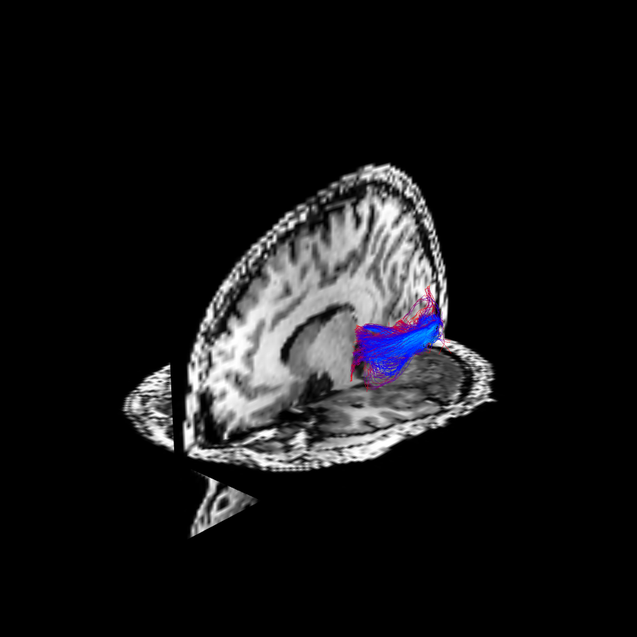

Note
Go to the end to download the full example code
Fiber to bundle coherence measures#
This demo presents the fiber to bundle coherence (FBC) quantitative measure of the alignment of each fiber with the surrounding fiber bundles [Meesters2016]. These measures are useful in ‘cleaning’ the results of tractography algorithms, since low FBCs indicate which fibers are isolated and poorly aligned with their neighbors, as shown in the figure below.

On the left this figure illustrates (in 2D) the contribution of two fiber points to the kernel density estimator. The kernel density estimator is the sum over all such locally aligned kernels. The local fiber to bundle coherence, shown on the right, color-coded for each fiber, is obtained by evaluating the kernel density estimator along the fibers. One spurious fiber is present which is isolated and badly aligned with the other fibers, and can be identified by a low LFBC value in the region where it deviates from the bundle. Figure adapted from [Portegies2015].#
Here we implement FBC measures based on kernel density estimation in the non-flat 5D position-orientation domain. First we compute the kernel density estimator induced by the full lifted output (defined in the space of positions and orientations) of the tractography. Then, the Local FBC (LFBC) is the result of evaluating the estimator along each element of the lifted fiber. A whole fiber measure, the relative FBC (RFBC), is calculated by the minimum of the moving average LFBC along the fiber. Details of the computation of FBC can be found in [Portegies2015].
The FBC measures are evaluated on the Stanford HARDI dataset (150 orientations, b=2000 \(s/mm^2\)) which is one of the standard example datasets in DIPY.
import numpy as np
from dipy.core.gradients import gradient_table
from dipy.data import get_fnames, default_sphere
from dipy.denoise.enhancement_kernel import EnhancementKernel
from dipy.direction import peaks_from_model, ProbabilisticDirectionGetter
from dipy.io.image import load_nifti_data, load_nifti
from dipy.io.gradients import read_bvals_bvecs
from dipy.reconst.shm import CsaOdfModel
from dipy.reconst.csdeconv import (
auto_response_ssst, ConstrainedSphericalDeconvModel)
from dipy.tracking import utils
from dipy.tracking.local_tracking import LocalTracking
from dipy.tracking.stopping_criterion import ThresholdStoppingCriterion
from dipy.tracking.streamline import Streamlines
from dipy.tracking.fbcmeasures import FBCMeasures
from dipy.viz import window, actor
# Enables/disables interactive visualization
interactive = False
# Fix seed
rng = np.random.default_rng(1)
# Read data
hardi_fname, hardi_bval_fname, hardi_bvec_fname = get_fnames('stanford_hardi')
label_fname = get_fnames('stanford_labels')
t1_fname = get_fnames('stanford_t1')
data, affine = load_nifti(hardi_fname)
labels = load_nifti_data(label_fname)
t1_data = load_nifti_data(t1_fname)
bvals, bvecs = read_bvals_bvecs(hardi_bval_fname, hardi_bvec_fname)
gtab = gradient_table(bvals, bvecs)
# Select a relevant part of the data (left hemisphere)
# Coordinates given in x bounds, y bounds, z bounds
dshape = data.shape[:-1]
xa, xb, ya, yb, za, zb = [15, 42, 10, 65, 18, 65]
data_small = data[xa:xb, ya:yb, za:zb]
selectionmask = np.zeros(dshape, 'bool')
selectionmask[xa:xb, ya:yb, za:zb] = True
The data is first fitted to the Constant Solid Angle (CDA) ODF Model. CSA is a good choice to estimate general fractional anisotropy (GFA), which the stopping criterion can use to restrict fiber tracking to those areas where the ODF shows significant restricted diffusion, thus creating a region-of-interest in which the computations are done.
# Perform CSA
csa_model = CsaOdfModel(gtab, sh_order=6)
csa_peaks = peaks_from_model(csa_model, data, default_sphere,
relative_peak_threshold=.6,
min_separation_angle=45,
mask=selectionmask)
# Stopping Criterion
stopping_criterion = ThresholdStoppingCriterion(csa_peaks.gfa, 0.25)
In order to perform probabilistic fiber tracking we first fit the data to the Constrained Spherical Deconvolution (CSD) model in DIPY. This model represents each voxel in the data set as a collection of small white matter fibers with different orientations. The density of fibers along each orientation is known as the Fiber Orientation Distribution (FOD), used in the fiber tracking.
# Perform CSD on the original data
response, ratio = auto_response_ssst(gtab, data, roi_radii=10, fa_thr=0.7)
csd_model = ConstrainedSphericalDeconvModel(gtab, response)
csd_fit = csd_model.fit(data_small)
csd_fit_shm = np.lib.pad(csd_fit.shm_coeff, ((xa, dshape[0]-xb),
(ya, dshape[1]-yb),
(za, dshape[2]-zb),
(0, 0)), 'constant')
# Probabilistic direction getting for fiber tracking
prob_dg = ProbabilisticDirectionGetter.from_shcoeff(csd_fit_shm,
max_angle=30.,
sphere=default_sphere)
0%| | 0/69795 [00:00<?, ?it/s]
0%|▎ | 203/69795 [00:00<00:34, 2016.09it/s]
1%|▋ | 424/69795 [00:00<00:32, 2120.08it/s]
1%|█▏ | 722/69795 [00:00<00:27, 2503.68it/s]
1%|█▌ | 995/69795 [00:00<00:26, 2585.78it/s]
2%|██ | 1285/69795 [00:00<00:25, 2691.46it/s]
2%|██▍ | 1555/69795 [00:00<00:25, 2687.30it/s]
3%|██▉ | 1824/69795 [00:00<00:26, 2613.12it/s]
3%|███▍ | 2170/69795 [00:00<00:23, 2870.48it/s]
4%|███▉ | 2458/69795 [00:00<00:25, 2609.30it/s]
4%|████▍ | 2774/69795 [00:01<00:24, 2759.75it/s]
4%|████▉ | 3099/69795 [00:01<00:23, 2895.11it/s]
5%|█████▍ | 3393/69795 [00:01<00:22, 2900.42it/s]
5%|█████▊ | 3686/69795 [00:01<00:22, 2903.37it/s]
6%|██████▎ | 3979/69795 [00:01<00:24, 2683.11it/s]
6%|██████▊ | 4256/69795 [00:01<00:24, 2700.91it/s]
6%|███████▏ | 4530/69795 [00:01<00:24, 2690.73it/s]
7%|███████▋ | 4802/69795 [00:01<00:24, 2693.85it/s]
7%|████████ | 5089/69795 [00:01<00:23, 2739.30it/s]
8%|████████▌ | 5393/69795 [00:01<00:22, 2820.83it/s]
8%|█████████ | 5679/69795 [00:02<00:22, 2825.51it/s]
9%|█████████▍ | 5967/69795 [00:02<00:22, 2833.81it/s]
9%|█████████▉ | 6251/69795 [00:02<00:22, 2828.39it/s]
9%|██████████▍ | 6535/69795 [00:02<00:22, 2826.60it/s]
10%|███████████ | 6930/69795 [00:02<00:19, 3155.21it/s]
10%|███████████▌ | 7246/69795 [00:02<00:21, 2967.10it/s]
11%|████████████ | 7546/69795 [00:02<00:20, 2969.21it/s]
11%|████████████▍ | 7845/69795 [00:02<00:22, 2745.74it/s]
12%|████████████▉ | 8149/69795 [00:02<00:21, 2818.84it/s]
12%|█████████████▍ | 8435/69795 [00:03<00:22, 2731.68it/s]
12%|█████████████▊ | 8711/69795 [00:03<00:22, 2660.18it/s]
13%|██████████████▎ | 9002/69795 [00:03<00:22, 2724.30it/s]
13%|██████████████▉ | 9382/69795 [00:03<00:19, 3024.26it/s]
14%|███████████████▌ | 9758/69795 [00:03<00:18, 3230.39it/s]
14%|███████████████▉ | 10084/69795 [00:03<00:19, 3139.45it/s]
15%|████████████████▍ | 10401/69795 [00:03<00:18, 3141.56it/s]
15%|████████████████▉ | 10717/69795 [00:03<00:18, 3140.61it/s]
16%|█████████████████▍ | 11033/69795 [00:03<00:19, 2966.26it/s]
16%|█████████████████▊ | 11333/69795 [00:04<00:20, 2812.04it/s]
17%|██████████████████▎ | 11618/69795 [00:04<00:21, 2741.12it/s]
17%|██████████████████▋ | 11895/69795 [00:04<00:21, 2668.13it/s]
17%|███████████████████▏ | 12164/69795 [00:04<00:21, 2639.58it/s]
18%|███████████████████▌ | 12429/69795 [00:04<00:21, 2609.55it/s]
18%|████████████████████ | 12691/69795 [00:04<00:21, 2605.90it/s]
19%|████████████████████▌ | 13039/69795 [00:04<00:19, 2851.65it/s]
19%|█████████████████████ | 13336/69795 [00:04<00:19, 2879.60it/s]
20%|█████████████████████▍ | 13625/69795 [00:04<00:19, 2860.23it/s]
20%|█████████████████████▉ | 13912/69795 [00:04<00:21, 2622.07it/s]
20%|██████████████████████▎ | 14179/69795 [00:05<00:21, 2558.04it/s]
21%|██████████████████████▊ | 14438/69795 [00:05<00:22, 2491.85it/s]
21%|███████████████████████▎ | 14766/69795 [00:05<00:20, 2704.18it/s]
22%|███████████████████████▋ | 15040/69795 [00:05<00:20, 2634.21it/s]
22%|████████████████████████ | 15306/69795 [00:05<00:20, 2636.11it/s]
22%|████████████████████████▋ | 15634/69795 [00:05<00:19, 2815.05it/s]
23%|█████████████████████████ | 15918/69795 [00:05<00:19, 2816.66it/s]
23%|█████████████████████████▌ | 16201/69795 [00:05<00:20, 2658.21it/s]
24%|██████████████████████████ | 16524/69795 [00:05<00:18, 2814.69it/s]
24%|██████████████████████████▍ | 16809/69795 [00:06<00:19, 2755.37it/s]
25%|██████████████████████████▉ | 17114/69795 [00:06<00:18, 2833.60it/s]
25%|███████████████████████████▍ | 17400/69795 [00:06<00:18, 2819.78it/s]
25%|███████████████████████████▉ | 17692/69795 [00:06<00:18, 2844.11it/s]
26%|████████████████████████████▎ | 17978/69795 [00:06<00:18, 2762.37it/s]
26%|████████████████████████████▉ | 18343/69795 [00:06<00:17, 3011.85it/s]
27%|█████████████████████████████▍ | 18646/69795 [00:06<00:17, 2843.71it/s]
27%|█████████████████████████████▊ | 18946/69795 [00:06<00:17, 2882.72it/s]
28%|██████████████████████████████▍ | 19281/69795 [00:06<00:16, 3009.44it/s]
28%|██████████████████████████████▊ | 19584/69795 [00:06<00:16, 3007.40it/s]
29%|███████████████████████████████▎ | 19901/69795 [00:07<00:16, 3047.83it/s]
29%|███████████████████████████████▊ | 20207/69795 [00:07<00:16, 2973.97it/s]
29%|████████████████████████████████▍ | 20544/69795 [00:07<00:15, 3080.81it/s]
30%|████████████████████████████████▉ | 20878/69795 [00:07<00:15, 3150.30it/s]
30%|█████████████████████████████████▍ | 21194/69795 [00:07<00:15, 3126.74it/s]
31%|█████████████████████████████████▉ | 21508/69795 [00:07<00:16, 2949.89it/s]
31%|██████████████████████████████████▍ | 21889/69795 [00:07<00:15, 3188.23it/s]
32%|███████████████████████████████████ | 22211/69795 [00:07<00:14, 3191.11it/s]
32%|███████████████████████████████████▌ | 22533/69795 [00:07<00:17, 2690.49it/s]
33%|████████████████████████████████████ | 22842/69795 [00:08<00:16, 2762.60it/s]
33%|████████████████████████████████████▍ | 23130/69795 [00:08<00:16, 2790.08it/s]
34%|████████████████████████████████████▉ | 23434/69795 [00:08<00:16, 2853.56it/s]
34%|█████████████████████████████████████▍ | 23726/69795 [00:08<00:16, 2850.15it/s]
35%|█████████████████████████████████████▉ | 24085/69795 [00:08<00:14, 3056.00it/s]
35%|██████████████████████████████████████▍ | 24395/69795 [00:08<00:15, 2975.81it/s]
35%|██████████████████████████████████████▉ | 24696/69795 [00:08<00:15, 2895.67it/s]
36%|███████████████████████████████████████▍ | 24995/69795 [00:08<00:15, 2915.42it/s]
36%|███████████████████████████████████████▉ | 25326/69795 [00:08<00:14, 3022.26it/s]
37%|████████████████████████████████████████▍ | 25695/69795 [00:09<00:13, 3209.59it/s]
37%|█████████████████████████████████████████ | 26018/69795 [00:09<00:13, 3208.06it/s]
38%|█████████████████████████████████████████▌ | 26340/69795 [00:09<00:14, 3039.18it/s]
38%|██████████████████████████████████████████ | 26703/69795 [00:09<00:13, 3200.63it/s]
39%|██████████████████████████████████████████▌ | 27026/69795 [00:09<00:13, 3202.90it/s]
39%|███████████████████████████████████████████ | 27349/69795 [00:09<00:13, 3114.34it/s]
40%|███████████████████████████████████████████▌ | 27663/69795 [00:09<00:14, 2928.46it/s]
40%|████████████████████████████████████████████ | 27978/69795 [00:09<00:14, 2984.20it/s]
41%|████████████████████████████████████████████▌ | 28290/69795 [00:09<00:13, 3017.69it/s]
41%|█████████████████████████████████████████████ | 28626/69795 [00:09<00:13, 3108.60it/s]
42%|█████████████████████████████████████████████▋ | 29005/69795 [00:10<00:12, 3297.32it/s]
42%|██████████████████████████████████████████████▎ | 29384/69795 [00:10<00:11, 3433.01it/s]
43%|██████████████████████████████████████████████▊ | 29729/69795 [00:10<00:12, 3331.02it/s]
43%|███████████████████████████████████████████████▍ | 30064/69795 [00:10<00:11, 3327.81it/s]
44%|███████████████████████████████████████████████▉ | 30398/69795 [00:10<00:12, 3139.47it/s]
44%|████████████████████████████████████████████████▍ | 30715/69795 [00:10<00:13, 2987.83it/s]
45%|█████████████████████████████████████████████████ | 31105/69795 [00:10<00:11, 3233.63it/s]
45%|█████████████████████████████████████████████████▌ | 31457/69795 [00:10<00:11, 3306.78it/s]
46%|██████████████████████████████████████████████████ | 31791/69795 [00:10<00:11, 3210.63it/s]
46%|██████████████████████████████████████████████████▌ | 32115/69795 [00:11<00:12, 2936.21it/s]
47%|███████████████████████████████████████████████████▏ | 32469/69795 [00:11<00:12, 3087.34it/s]
47%|███████████████████████████████████████████████████▊ | 32866/69795 [00:11<00:11, 3323.57it/s]
48%|████████████████████████████████████████████████████▎ | 33230/69795 [00:11<00:10, 3406.37it/s]
48%|████████████████████████████████████████████████████▉ | 33575/69795 [00:11<00:10, 3407.73it/s]
49%|█████████████████████████████████████████████████████▍ | 33919/69795 [00:11<00:10, 3310.75it/s]
49%|█████████████████████████████████████████████████████▉ | 34253/69795 [00:11<00:11, 3148.01it/s]
50%|██████████████████████████████████████████████████████▍ | 34571/69795 [00:11<00:11, 3047.92it/s]
50%|██████████████████████████████████████████████████████▉ | 34878/69795 [00:11<00:11, 3047.55it/s]
50%|███████████████████████████████████████████████████████▍ | 35185/69795 [00:12<00:11, 3034.44it/s]
51%|███████████████████████████████████████████████████████▉ | 35529/69795 [00:12<00:11, 3092.14it/s]
51%|████████████████████████████████████████████████████████▍ | 35839/69795 [00:12<00:11, 3067.32it/s]
52%|████████████████████████████████████████████████████████▉ | 36160/69795 [00:12<00:10, 3099.91it/s]
52%|█████████████████████████████████████████████████████████▍ | 36481/69795 [00:12<00:10, 3125.34it/s]
53%|██████████████████████████████████████████████████████████ | 36802/69795 [00:12<00:10, 3143.17it/s]
53%|██████████████████████████████████████████████████████████▍ | 37117/69795 [00:12<00:10, 3140.08it/s]
54%|██████████████████████████████████████████████████████████▉ | 37432/69795 [00:12<00:10, 3136.68it/s]
54%|███████████████████████████████████████████████████████████▍ | 37746/69795 [00:12<00:10, 2954.44it/s]
55%|███████████████████████████████████████████████████████████▉ | 38068/69795 [00:12<00:10, 3024.19it/s]
55%|████████████████████████████████████████████████████████████▍ | 38373/69795 [00:13<00:10, 2937.66it/s]
55%|████████████████████████████████████████████████████████████▉ | 38669/69795 [00:13<00:10, 2870.93it/s]
56%|█████████████████████████████████████████████████████████████▍ | 39010/69795 [00:13<00:10, 3012.98it/s]
56%|█████████████████████████████████████████████████████████████▉ | 39325/69795 [00:13<00:10, 3044.24it/s]
57%|██████████████████████████████████████████████████████████████▍ | 39631/69795 [00:13<00:09, 3041.21it/s]
57%|██████████████████████████████████████████████████████████████▉ | 39936/69795 [00:13<00:09, 3020.55it/s]
58%|███████████████████████████████████████████████████████████████▍ | 40259/69795 [00:13<00:09, 3075.24it/s]
58%|███████████████████████████████████████████████████████████████▉ | 40567/69795 [00:13<00:09, 3070.32it/s]
59%|████████████████████████████████████████████████████████████████▍ | 40892/69795 [00:13<00:09, 3123.50it/s]
59%|████████████████████████████████████████████████████████████████▉ | 41205/69795 [00:14<00:09, 2934.30it/s]
59%|█████████████████████████████████████████████████████████████████▍ | 41501/69795 [00:14<00:09, 2936.07it/s]
60%|█████████████████████████████████████████████████████████████████▊ | 41797/69795 [00:14<00:09, 2937.08it/s]
60%|██████████████████████████████████████████████████████████████████▎ | 42092/69795 [00:14<00:09, 2788.28it/s]
61%|██████████████████████████████████████████████████████████████████▊ | 42373/69795 [00:14<00:09, 2771.27it/s]
61%|███████████████████████████████████████████████████████████████████▎ | 42678/69795 [00:14<00:09, 2844.85it/s]
62%|███████████████████████████████████████████████████████████████████▊ | 42999/69795 [00:14<00:09, 2945.91it/s]
62%|████████████████████████████████████████████████████████████████████▎ | 43350/69795 [00:14<00:08, 3102.31it/s]
63%|████████████████████████████████████████████████████████████████████▊ | 43662/69795 [00:14<00:08, 3100.30it/s]
63%|█████████████████████████████████████████████████████████████████████▎ | 44003/69795 [00:14<00:08, 3184.20it/s]
64%|█████████████████████████████████████████████████████████████████████▉ | 44390/69795 [00:15<00:07, 3378.25it/s]
64%|██████████████████████████████████████████████████████████████████████▍ | 44729/69795 [00:15<00:07, 3373.94it/s]
65%|███████████████████████████████████████████████████████████████████████ | 45067/69795 [00:15<00:07, 3365.30it/s]
65%|███████████████████████████████████████████████████████████████████████▋ | 45504/69795 [00:15<00:06, 3652.89it/s]
66%|████████████████████████████████████████████████████████████████████████▎ | 45870/69795 [00:15<00:06, 3539.25it/s]
66%|████████████████████████████████████████████████████████████████████████▉ | 46314/69795 [00:15<00:06, 3791.75it/s]
67%|█████████████████████████████████████████████████████████████████████████▌ | 46695/69795 [00:15<00:06, 3385.93it/s]
67%|██████████████████████████████████████████████████████████████████████████▏ | 47043/69795 [00:15<00:06, 3315.67it/s]
68%|██████████████████████████████████████████████████████████████████████████▋ | 47381/69795 [00:15<00:07, 3073.27it/s]
68%|███████████████████████████████████████████████████████████████████████████▏ | 47695/69795 [00:16<00:07, 2961.86it/s]
69%|███████████████████████████████████████████████████████████████████████████▊ | 48076/69795 [00:16<00:06, 3166.16it/s]
69%|████████████████████████████████████████████████████████████████████████████▎ | 48453/69795 [00:16<00:06, 3325.14it/s]
70%|████████████████████████████████████████████████████████████████████████████▉ | 48791/69795 [00:16<00:06, 3333.23it/s]
70%|█████████████████████████████████████████████████████████████████████████████▍ | 49128/69795 [00:16<00:06, 3337.97it/s]
71%|█████████████████████████████████████████████████████████████████████████████▉ | 49465/69795 [00:16<00:06, 3320.95it/s]
71%|██████████████████████████████████████████████████████████████████████████████▍ | 49799/69795 [00:16<00:06, 2970.62it/s]
72%|██████████████████████████████████████████████████████████████████████████████▉ | 50104/69795 [00:16<00:06, 2983.72it/s]
72%|███████████████████████████████████████████████████████████████████████████████▍ | 50413/69795 [00:16<00:06, 3012.89it/s]
73%|███████████████████████████████████████████████████████████████████████████████▉ | 50719/69795 [00:17<00:06, 2864.68it/s]
73%|████████████████████████████████████████████████████████████████████████████████▌ | 51080/69795 [00:17<00:06, 3065.33it/s]
74%|█████████████████████████████████████████████████████████████████████████████████▏ | 51517/69795 [00:17<00:05, 3427.58it/s]
74%|█████████████████████████████████████████████████████████████████████████████████▋ | 51865/69795 [00:17<00:05, 3321.09it/s]
75%|██████████████████████████████████████████████████████████████████████████████████▎ | 52233/69795 [00:17<00:05, 3416.89it/s]
75%|██████████████████████████████████████████████████████████████████████████████████▊ | 52578/69795 [00:17<00:05, 3163.97it/s]
76%|███████████████████████████████████████████████████████████████████████████████████▍ | 52908/69795 [00:17<00:05, 3194.37it/s]
76%|███████████████████████████████████████████████████████████████████████████████████▉ | 53232/69795 [00:17<00:05, 3030.48it/s]
77%|████████████████████████████████████████████████████████████████████████████████████▍ | 53576/69795 [00:17<00:05, 3137.53it/s]
77%|████████████████████████████████████████████████████████████████████████████████████▉ | 53920/69795 [00:17<00:04, 3216.12it/s]
78%|█████████████████████████████████████████████████████████████████████████████████████▍ | 54245/69795 [00:18<00:05, 3043.98it/s]
78%|█████████████████████████████████████████████████████████████████████████████████████▉ | 54553/69795 [00:18<00:05, 3031.23it/s]
79%|██████████████████████████████████████████████████████████████████████████████████████▍ | 54859/69795 [00:18<00:05, 2870.93it/s]
79%|██████████████████████████████████████████████████████████████████████████████████████▉ | 55149/69795 [00:18<00:05, 2873.67it/s]
79%|███████████████████████████████████████████████████████████████████████████████████████▎ | 55439/69795 [00:18<00:04, 2875.99it/s]
80%|███████████████████████████████████████████████████████████████████████████████████████▊ | 55729/69795 [00:18<00:05, 2719.29it/s]
80%|████████████████████████████████████████████████████████████████████████████████████████▎ | 56013/69795 [00:18<00:05, 2747.37it/s]
81%|████████████████████████████████████████████████████████████████████████████████████████▉ | 56405/69795 [00:18<00:04, 3076.22it/s]
81%|█████████████████████████████████████████████████████████████████████████████████████████▍ | 56725/69795 [00:18<00:04, 3103.89it/s]
82%|█████████████████████████████████████████████████████████████████████████████████████████▉ | 57038/69795 [00:19<00:04, 3104.19it/s]
82%|██████████████████████████████████████████████████████████████████████████████████████████▍ | 57350/69795 [00:19<00:04, 3012.29it/s]
83%|██████████████████████████████████████████████████████████████████████████████████████████▊ | 57653/69795 [00:19<00:04, 3010.68it/s]
83%|███████████████████████████████████████████████████████████████████████████████████████████▎ | 57956/69795 [00:19<00:04, 2841.92it/s]
83%|███████████████████████████████████████████████████████████████████████████████████████████▊ | 58243/69795 [00:19<00:04, 2842.84it/s]
84%|████████████████████████████████████████████████████████████████████████████████████████████▎ | 58539/69795 [00:19<00:03, 2870.06it/s]
84%|████████████████████████████████████████████████████████████████████████████████████████████▋ | 58828/69795 [00:19<00:03, 2868.20it/s]
85%|█████████████████████████████████████████████████████████████████████████████████████████████▏ | 59116/69795 [00:19<00:03, 2865.65it/s]
85%|█████████████████████████████████████████████████████████████████████████████████████████████▋ | 59420/69795 [00:19<00:03, 2916.90it/s]
86%|██████████████████████████████████████████████████████████████████████████████████████████████▏ | 59755/69795 [00:20<00:03, 3029.98it/s]
86%|██████████████████████████████████████████████████████████████████████████████████████████████▋ | 60059/69795 [00:20<00:03, 2775.95it/s]
86%|███████████████████████████████████████████████████████████████████████████████████████████████ | 60341/69795 [00:20<00:03, 2714.79it/s]
87%|███████████████████████████████████████████████████████████████████████████████████████████████▌ | 60616/69795 [00:20<00:03, 2574.01it/s]
87%|███████████████████████████████████████████████████████████████████████████████████████████████▉ | 60879/69795 [00:20<00:03, 2583.68it/s]
88%|████████████████████████████████████████████████████████████████████████████████████████████████▍ | 61211/69795 [00:20<00:03, 2783.38it/s]
88%|█████████████████████████████████████████████████████████████████████████████████████████████████ | 61550/69795 [00:20<00:02, 2949.29it/s]
89%|█████████████████████████████████████████████████████████████████████████████████████████████████▍ | 61848/69795 [00:20<00:02, 2950.49it/s]
89%|█████████████████████████████████████████████████████████████████████████████████████████████████▉ | 62157/69795 [00:20<00:02, 2983.95it/s]
90%|██████████████████████████████████████████████████████████████████████████████████████████████████▍ | 62470/69795 [00:20<00:02, 3019.19it/s]
90%|██████████████████████████████████████████████████████████████████████████████████████████████████▉ | 62815/69795 [00:21<00:02, 3139.83it/s]
90%|███████████████████████████████████████████████████████████████████████████████████████████████████▍ | 63130/69795 [00:21<00:02, 2959.09it/s]
91%|████████████████████████████████████████████████████████████████████████████████████████████████████ | 63472/69795 [00:21<00:02, 3082.55it/s]
91%|████████████████████████████████████████████████████████████████████████████████████████████████████▌ | 63783/69795 [00:21<00:02, 2915.95it/s]
92%|█████████████████████████████████████████████████████████████████████████████████████████████████████ | 64098/69795 [00:21<00:01, 2976.30it/s]
92%|█████████████████████████████████████████████████████████████████████████████████████████████████████▍ | 64399/69795 [00:21<00:01, 2898.20it/s]
93%|█████████████████████████████████████████████████████████████████████████████████████████████████████▉ | 64692/69795 [00:21<00:01, 2899.34it/s]
93%|██████████████████████████████████████████████████████████████████████████████████████████████████████▍ | 65019/69795 [00:21<00:01, 2998.28it/s]
94%|██████████████████████████████████████████████████████████████████████████████████████████████████████▉ | 65321/69795 [00:21<00:01, 2833.06it/s]
94%|███████████████████████████████████████████████████████████████████████████████████████████████████████▍ | 65607/69795 [00:22<00:01, 2835.21it/s]
94%|███████████████████████████████████████████████████████████████████████████████████████████████████████▊ | 65899/69795 [00:22<00:01, 2854.52it/s]
95%|████████████████████████████████████████████████████████████████████████████████████████████████████████▎ | 66204/69795 [00:22<00:01, 2903.31it/s]
95%|████████████████████████████████████████████████████████████████████████████████████████████████████████▊ | 66496/69795 [00:22<00:01, 2818.59it/s]
96%|█████████████████████████████████████████████████████████████████████████████████████████████████████████▎ | 66796/69795 [00:22<00:01, 2865.90it/s]
96%|█████████████████████████████████████████████████████████████████████████████████████████████████████████▊ | 67103/69795 [00:22<00:00, 2920.72it/s]
97%|██████████████████████████████████████████████████████████████████████████████████████████████████████████▎ | 67451/69795 [00:22<00:00, 3078.46it/s]
97%|██████████████████████████████████████████████████████████████████████████████████████████████████████████▊ | 67760/69795 [00:22<00:00, 3076.18it/s]
98%|███████████████████████████████████████████████████████████████████████████████████████████████████████████▎ | 68069/69795 [00:22<00:00, 3065.24it/s]
98%|███████████████████████████████████████████████████████████████████████████████████████████████████████████▊ | 68376/69795 [00:22<00:00, 2897.59it/s]
98%|████████████████████████████████████████████████████████████████████████████████████████████████████████████▏ | 68669/69795 [00:23<00:00, 2900.03it/s]
99%|████████████████████████████████████████████████████████████████████████████████████████████████████████████▋ | 68979/69795 [00:23<00:00, 2950.87it/s]
99%|█████████████████████████████████████████████████████████████████████████████████████████████████████████████▏| 69305/69795 [00:23<00:00, 3033.00it/s]
100%|█████████████████████████████████████████████████████████████████████████████████████████████████████████████▋| 69619/69795 [00:23<00:00, 3056.16it/s]
100%|██████████████████████████████████████████████████████████████████████████████████████████████████████████████| 69795/69795 [00:23<00:00, 2977.80it/s]
The optic radiation is reconstructed by tracking fibers from the calcarine sulcus (visual cortex V1) to the lateral geniculate nucleus (LGN). We seed from the calcarine sulcus by selecting a region-of-interest (ROI) cube of dimensions 3x3x3 voxels.
# Set a seed region region for tractography.
mask = np.zeros(data.shape[:-1], 'bool')
rad = 3
mask[26-rad:26+rad, 29-rad:29+rad, 31-rad:31+rad] = True
seeds = utils.seeds_from_mask(mask, affine, density=[4, 4, 4])
Local Tracking is used for probabilistic tractography which takes the direction getter along with the stopping criterion and seeds as input.
# Perform tracking using Local Tracking
streamlines_generator = LocalTracking(prob_dg, stopping_criterion, seeds,
affine, step_size=.5)
# Compute streamlines.
streamlines = Streamlines(streamlines_generator)
In order to select only the fibers that enter into the LGN, another ROI is created from a cube of size 5x5x5 voxels. The near_roi command is used to find the fibers that traverse through this ROI.
# Set a mask for the lateral geniculate nucleus (LGN)
mask_lgn = np.zeros(data.shape[:-1], 'bool')
rad = 5
mask_lgn[35-rad:35+rad, 42-rad:42+rad, 28-rad:28+rad] = True
# Select all the fibers that enter the LGN and discard all others
filtered_fibers2 = utils.near_roi(streamlines, affine, mask_lgn, tol=1.8)
sfil = []
for i in range(len(streamlines)):
if filtered_fibers2[i]:
sfil.append(streamlines[i])
streamlines = Streamlines(sfil)
Inspired by [Rodrigues2010], a lookup-table is created, containing rotated versions of the fiber propagation kernel \(P_t\) [DuitsAndFranken2011] rotated over a discrete set of orientations. See the Crossing-preserving contextual enhancement example for more details regarding the kernel. In order to ensure rotationally invariant processing, the discrete orientations are required to be equally distributed over a sphere. By default, a sphere with 100 directions is obtained from electrostatic repulsion in DIPY.
# Compute lookup table
D33 = 1.0
D44 = 0.02
t = 1
k = EnhancementKernel(D33, D44, t)
The FBC measures are now computed, taking the tractography results and the lookup tables as input.
# Apply FBC measures
fbc = FBCMeasures(streamlines, k)
After calculating the FBC measures, a threshold can be chosen on the relative FBC (RFBC) in order to remove spurious fibers. Recall that the relative FBC (RFBC) is calculated by the minimum of the moving average LFBC along the fiber. In this example we show the results for threshold 0 (i.e. all fibers are included) and 0.2 (removing the 20 percent most spurious fibers).
# Calculate LFBC for original fibers
fbc_sl_orig, clrs_orig, rfbc_orig = \
fbc.get_points_rfbc_thresholded(0, emphasis=0.01)
# Apply a threshold on the RFBC to remove spurious fibers
fbc_sl_thres, clrs_thres, rfbc_thres = \
fbc.get_points_rfbc_thresholded(0.125, emphasis=0.01)
The results of FBC measures are visualized, showing the original fibers colored by LFBC (see optic_radiation_before_cleaning), and the fibers after the cleaning procedure via RFBC thresholding (see optic_radiation_after_cleaning).
# Create scene
scene = window.Scene()
# Original lines colored by LFBC
lineactor = actor.line(fbc_sl_orig, np.vstack(clrs_orig), linewidth=0.2)
scene.add(lineactor)
# Horizontal (axial) slice of T1 data
vol_actor1 = actor.slicer(t1_data, affine=affine)
vol_actor1.display(z=20)
scene.add(vol_actor1)
# Vertical (sagittal) slice of T1 data
vol_actor2 = actor.slicer(t1_data, affine=affine)
vol_actor2.display(x=35)
scene.add(vol_actor2)
# Show original fibers
scene.set_camera(position=(-264, 285, 155),
focal_point=(0, -14, 9),
view_up=(0, 0, 1))
window.record(scene, n_frames=1, out_path='OR_before.png', size=(900, 900))
if interactive:
window.show(scene)
# Show thresholded fibers
scene.rm(lineactor)
scene.add(actor.line(fbc_sl_thres, np.vstack(clrs_thres), linewidth=0.2))
window.record(scene, n_frames=1, out_path='OR_after.png', size=(900, 900))
if interactive:
window.show(scene)
- 
The optic radiation obtained through probabilistic tractography colored by local fiber to bundle coherence.
The tractography result is cleaned (shown in bottom) by removing fibers with a relative FBC (RFBC) lower than the threshold \(\tau = 0.2\).
Acknowledgments#
The techniques are developed in close collaboration with Pauly Ossenblok of the Academic Center of Epileptology Kempenhaeghe & Maastricht UMC+.
References#
S. Meesters, G. Sanguinetti, E. Garyfallidis, J. Portegies, P. Ossenblok, R. Duits. (2016) Cleaning output of tractography via fiber to bundle coherence, a new open source implementation. Human Brain Mapping Conference 2016.
J. Portegies, R. Fick, G. Sanguinetti, S. Meesters, G.Girard, and R. Duits. (2015) Improving Fiber Alignment in HARDI by Combining Contextual PDE flow with Constrained Spherical Deconvolution. PLoS One.
R. Duits and E. Franken (2011) Left-invariant diffusions on the space of positions and orientations and their application to crossing-preserving smoothing of HARDI images. International Journal of Computer Vision, 92:231-264.
P. Rodrigues, R. Duits, B. Romeny, A. Vilanova (2010). Accelerated Diffusion Operators for Enhancing DW-MRI. Eurographics Workshop on Visual Computing for Biology and Medicine. The Eurographics Association.
Total running time of the script: (2 minutes 30.227 seconds)